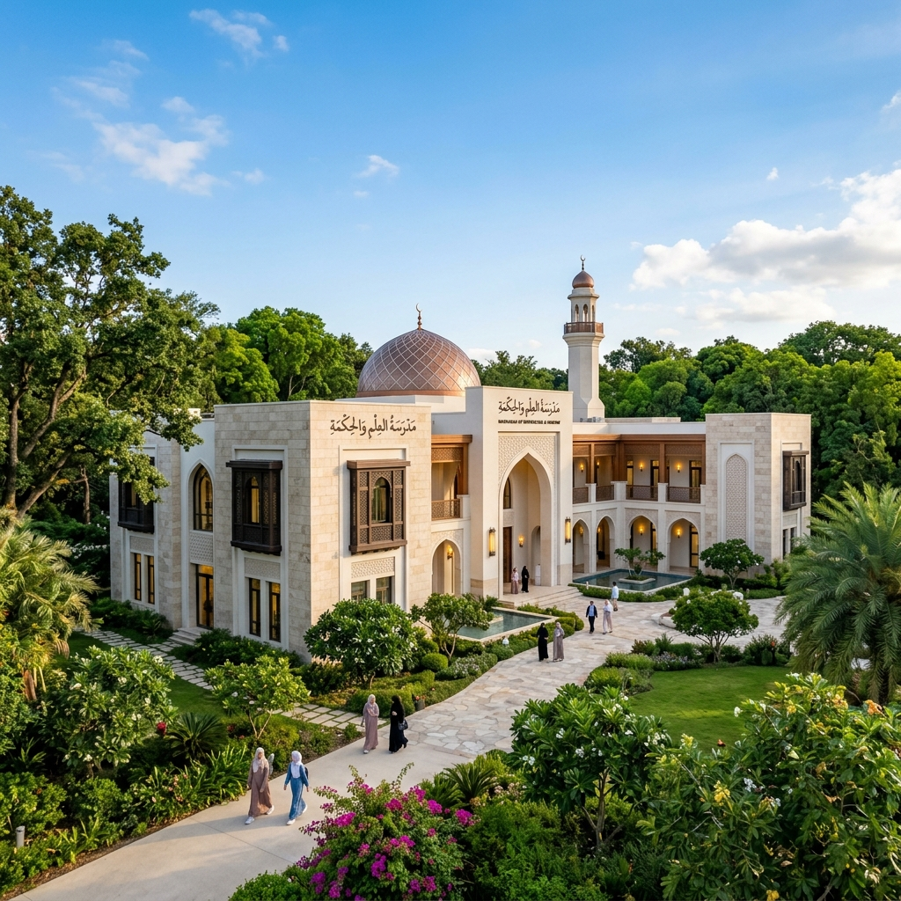
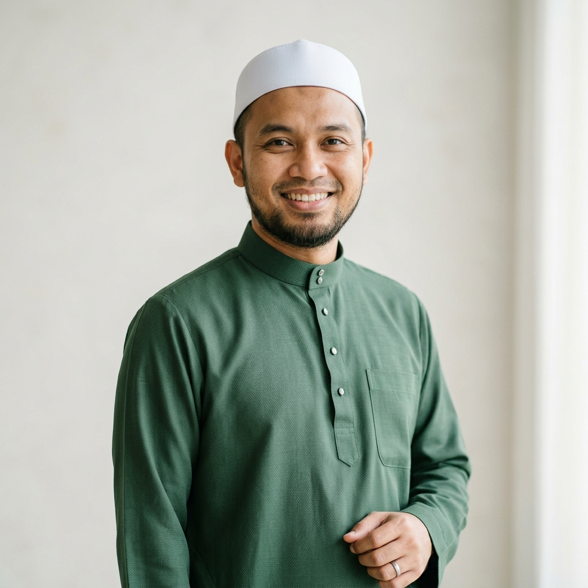
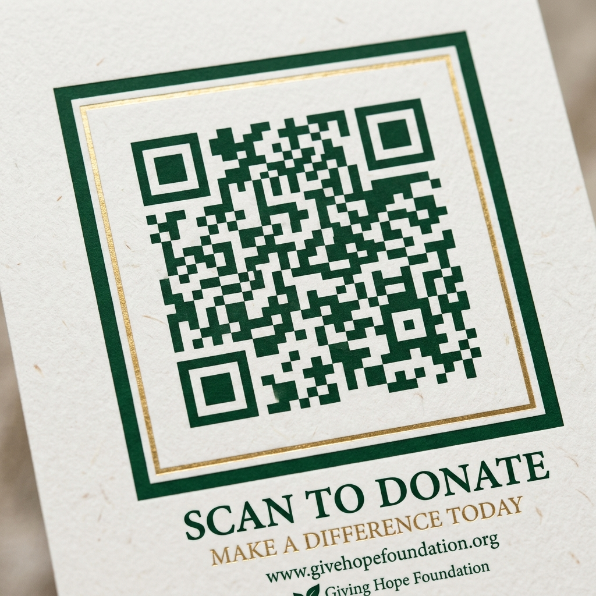

Memupuk Iman, Ilmu,
dan Akhlak
Memperkasakan generasi pelapis dengan pemahaman mendalam tentang prinsip-prinsip Islam berserta kecemerlangan akademik moden.
Berita Terkini
Tentang Madrasah Ijat
Ditubuhkan dengan penuh kesungguhan untuk menyebarkan cahaya ilmu (Nur Al-Ilm).
Sejarah Kami
Diasaskan oleh para ilmuwan yang dihormati di tengah-tengah komuniti tempatan, Madrasah Ijat pada asalnya hanyalah sebuah majlis halaqah kecil yang kemudiannya berkembang pesat menjadi sebuah institusi pendidikan moden yang berdedikasi melahirkan pewaris tunjang agama berteraskan Sunnah Rasulullah.
Misi
Menyediakan pendidikan rohani secara holistik yang menggabungkan kemurnian ajaran Islam yang tulen dengan subjek-subjek kurikulum akademik profesional.
Visi
Menjadi institusi pendidikan Islam yang terkemuka dalam melahirkan barisan pelapis kepimpinan bertaqwa yang berbekalkan keunggulan iman dan akhlak mahmudah.
Nilai-Nilai Teras
-
Ihsan (Kecemerlangan) Berusaha mencapai taraf kesempurnaan dalam setiap sudut ibadah dan segala urusan kelangsungan duniawi.
-
Amanah (Integriti) Berpegang teguh pada tuntutan kejujuran, sikap saling mempercayai, dan amanjiwa di dalam apa juga tindakan atau keputusan.
-
Rahmah (Kasih Sayang) Memupuk masyarakat prihatin, menyemai toleransi beragama, dan sentiasa menyokong kesejahteraan antara satu dengan yang lain.
Kurikulum KAMI
Pendekatan bersepadu menggabungkan khazanah ilmu wahyu tuhan dengan disiplin ilmu kontemporari era permodenan.
Pengajian Al-Quran
Tajwid & Tahfiz: Membetulkan kemakhrajah bacaan (tahsin) serta penjagaan disiplin hafazan kalam suci Al-Quran dibimbing oleh pengajar yang kompeten.
Feqah (Sistem Syariat)
Memahami rangka asas pelaksanaan rukun syarak sama ada perihal ibadah ataupun fiqh mualamat di dalam rutin seharian mengambil dari sandaran teks muktamad sahihah.
Hadis & Sirah
Mengkaji matan perbendaharaan koleksi hadis dari Nabi kita (SAW) serta mencedok intipati pengajaran hasil penghayatan sirah atau lembaran hidup Baginda.
Matematik & Sains
Memperlengkap para penuntut di sini merungkai tabir rahsia alam dengan asas kemahiran saintifik yang bersuluhkan taqwa berpandu Al-Quran.
Pengajian Bahasa
Kemahiran bahasa yang bertutur (Bahasa Arab bagi perantaraan bacaan turath), (Bahasa Inggeris bagi kelansungan dan hubungan luar) mahupun sastera Melayu kebanggaan bangsa.
Teknologi & Etika
Pembelajaran komprehensif mengintegrasi sains komputer bersesuaian abad ke-21 seiring penekanan etika penggunaan kemudahan alam siber dari perspektif landasan syarak.
Warga Pendidik Kami
Barisan Asatizah Kami

Ustaz Ibrahim Harun
Ketua Pengajian Al-QuranB.A. Universiti Al-Azhar
Ustazah Nuraisyah
Guru Sains & MatematikB.Sc. Universiti Malaya
Ustaz Hafizuddin
Penyelaras Feqah MualamatM.A. Perundangan Islam
Ustazah Hanim
Guru Bahasa ArabB.A. Pendidikan Bahasa Arab
Kehidupan Pelajar & Aktiviti Tahunan
Pemusatan persekitaran yang segar bersesuaian fitrah peneroka ilmu untuk kekal membesar melepasi ruang sempadan kelas.
Kejohanan Olahraga Sukaneka Tahunan
Kem Tarbiyyah Qiyamullail & Pengukuhan
Cabaran Pidato Dakwah & Sayembara Nasyid
Kelab Ko-Kurikulum & Persatuan Pelajar
Kalendar Perancangan Akademik
| Program / Tentatif Berjadual | Tarikh Kalendar Masihi | Tarikh Kalendar Hijrah | Status Pelaksanaan |
|---|---|---|---|
| Permulaan Sesi Pengajian Semester/Penggal 1 | 15 Januari 2026 | 25 Rejab 1447H | Telah Selesai |
| Peperiksaan Percubaan Pertengahan Tahun | 10-15 Mei 2026 | 23-28 Zulkaedah 1447H | Akan Datang |
| Majlis Permuafakatan Ibubapa & Asatizah | 30 Mei 2026 | 13 Zulhijjah 1447H | Akan Datang |
| Ihtifal Hari Kecemerlangan & Majlis Penutup (Graduasi) | 20 November 2026 | 10 Jamadilakhir 1448H | Di Dalam Perancangan |
Usaha Kami Memerlukan Sokongan Anda
Lakukan pelaburan rohani bersaham pahala kebaikan yang berterusan (Sadaqah Jariyah). Lebihan sumbangan dana sebahagian kecil daripada rezeki yang difitrahkan Allah buat penaja budiman berkeupayaan ini sedikit sebanyak akan kami corakkan semula merealisasikan penaiktarafan kelengkapan, biasiswa kemanusiaan asnaf tertindas serta membiayai kelangsungan alat bantuan mengajar cemerlang.
Sumbangan Atas Talian (Aplikasi DuitNow/QR Pay)

Maklumat Lanjut Deposit Akaun Bank
Bank Islam Malaysia Berhad
Tabung Pendidikan Madrasah Ijat
1234 5678 9012 34
Berhubung Dengan Pihak Kami
Alamat Bersepadu
Lot 123, Jalan Beringin, Mukim Pendidikan,
43000
Bandar Kajang, Negeri Selangor Darul Ehsan, Malaysia.
Telefon
+60 3-8000 1234 (Pertanyaan Operasi)
Beroperasi dari
Isnin-Jumaat, 8.00 Pagi - 5.00 Petang
Emel Pentadbir Rasmi
info@madrasah-ijat.edu.my